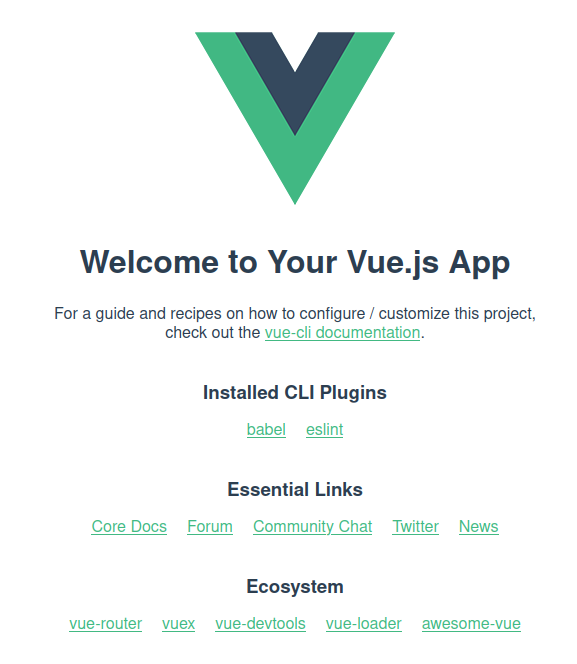

class: center, middle # Starting with Vue.js --- ## What Is Vue.js? .breadcrumbs[<a href="#1">Starting with Vue.js</a>] - An open-source model–view–view model (MVVM) front end JavaScript framework for building user interfaces and single-page applications. - Created by Evan You in 2013 - Last release (September 18, 2020): **Vue 3.0** <sup>[**From Wikipedia**][wiki-vuejs]</sup> --- ## Why begin with Vue.js? .breadcrumbs[<a href="#1">Starting with Vue.js</a>] - Gentle Learning Curve - Modular and Flexible - Easy to start with vue-CLI - Popular - [Extensive documentation][extent-doc] <br> <br> <sup>[Documentation In French][french-doc]</sup> --- ## Key Characteristics .breadcrumbs[<a href="#1">Starting with Vue.js</a>] <p align="center"> <img src='https://www.cmarix.com/blog/wp-content/uploads/2020/02/vue2.jpg' class='w80' /> </p> <sup>[**Source**][vue-characteristics]</sup> --- class: center, middle ## Let's start coding with Vue.js ! .breadcrumbs[<a href="#1">Starting with Vue.js</a>] --- ## Getting started with vue-cli .breadcrumbs[<a href="#1">Starting with Vue.js</a>] The first step is to install vue-CLI (Command Line Interface). ```cmd npm install -g @vue/cli ``` _Vue-CLI allows you to start up a vue.js 3.0 easily and rapidly._ --- ## Create your first vue.js 3.0 project .breadcrumbs[<a href="#1">Starting with Vue.js</a>] 1. Create a new project Vue.js 3.0 ```cmd vue create your_project_name ``` 2. Choose vue.js 3.0 option > Default (Vue 3 Preview) 3. Enter to your new project directory ```cmd cd your_project_name ``` 4. Launch your project ```cmd npm run serve ``` --- ## Welcome :) !! .breadcrumbs[<a href="#1">Starting with Vue.js</a>] <p align="center">  </p> **Let's check the code !** --- ## Declarative Rendering .breadcrumbs[<a href="#1">Starting with Vue.js</a>] The declarative rendering enables to declaratively render data to the DOM !! <u>Syntax</u>: `{{ }}` ```html [HTML] <div id="counter">Counter: {{ counter }}</div> ``` ```js [JS]; let counter = 0; ``` --- class: center, middle ## Deep Dive Within Vue.js Directives .breadcrumbs[<a href="#1">Starting with Vue.js</a>] --- ## Conditional rendering with _v-if_ .breadcrumbs[<a href="#1">Starting with Vue.js</a>] The directive `v-if` is used to conditionally render a block. The block will only be rendered if the directive's expression returns a value: `True` <sup>[**Link to the documentation**][vue-doc-if]</sup> --- ### /// In basic HTML/JS .breadcrumbs[<a href="#1">Starting with Vue.js</a> > <a href="#11">Conditional rendering with _v-if_</a>] ```html [HTML] <span id="span1" display="block">Hello</span> <span id="span2" display="block">World !</span> ``` ```js [JS]; if (conditional_expression) { document.getElementById("span1").style.display = "none"; document.getElementById("span2").style.display = "block"; } else { document.getElementById("span1").style.display = "block"; document.getElementById("span2").style.display = "none"; } ``` > \>> World ! --- ### /// In Vue.js .breadcrumbs[<a href="#1">Starting with Vue.js</a> > <a href="#11">Conditional rendering with _v-if_</a>] ```html [HTML] <span v-if="conditional_expression">Hello</span> <span v-else>World !</span> ``` ```js [JS]; conditional_expression = false; ``` > \>> World ! --- ## List rendering with _v-for_ .breadcrumbs[<a href="#1">Starting with Vue.js</a>] The directive `v-for` is used to render a list of items based on an array. The `v-for` directive requires a special syntax in the form of `item in items`, where `items` is the source data array and `item` is an **alias** for the array element being iterated on. To better predict how exactly the DOM will be rendered you need to use the `:key` attribute. <sup>[**Link to the documentation**][vue-doc-for]</sup> --- ### /// In basic HTML/JS .breadcrumbs[<a href="#1">Starting with Vue.js</a> > <a href="#14">List rendering with _v-for_</a>] ```html [HTML] <ul id="myfruits-list"> <li>Apple</li> <li>Kiwi</li> <li>Orange</li> </ul> ``` > - Apple > - Kiwi > - Orange --- ### /// In Vue.js .breadcrumbs[<a href="#1">Starting with Vue.js</a> > <a href="#14">List rendering with _v-for_</a>] ```html [HTML] <ul id="myfruits-list"> <li v-for="fruit in fruits" :key="fruit"></li> </ul> ``` ```js [JS]; let fruits = ["Apple", "Kiwi", "Orange"]; ``` > - Apple > - Kiwi > - Orange --- ### How to add an element dynamically to this list? .breadcrumbs[<a href="#1">Starting with Vue.js</a> > <a href="#14">List rendering with _v-for_</a>] **/// In basic HTML/JS** ```js let ul = document.getElementById("myfruits-list"); let li = document.createElement("li"); li.appendChild(document.createTextNode("Pineapple")); ul.appendChild(li); ``` **/// In Vue.js** ```js fruits.push("Pineapple"); ``` --- ## Form input bindings with _v-model_ .breadcrumbs[<a href="#1">Starting with Vue.js</a>] The directive `v-model` is used to create two-way data bindings on form input, textarea, and select elements. It automatically picks the correct way to update the element based on the input type. <u>Shorthand</u>: `:` <sup>[**Link to the documentation**][vue-doc-model]</sup> --- ### /// In basic HTML/JS .breadcrumbs[<a href="#1">Starting with Vue.js</a> > <a href="#18">Form input bindings with _v-model_</a>] ```html [HTML] <p id="my-message">your text is...</p> <input name="input-message" /> ``` ```js [JS]; const input = document.querySelector("input"); const log = document.getElementById("my-message"); input.addEventListener("input", updateValue); function updateValue(e) { log.textContent = e.target.value; } ``` > \* type _Hello MDT-GIO-1_ in input \* > \>> mymessage = "Hello MDT-GIO-1!" --- ### /// In Vue.js .breadcrumbs[<a href="#1">Starting with Vue.js</a> > <a href="#18">Form input bindings with _v-model_</a>] ```html [HTML] <p>{{ mymessage }}</p> <input v-model="mymessage" /> ``` ```js [JS]; let mymessage = "your text is..."; ``` > \* type _Hello MDT-GIO-1_ in input \* > \>> mymessage = "Hello MDT-GIO-1!" --- ## Data binding with _v-bind_ .breadcrumbs[<a href="#1">Starting with Vue.js</a>] The directive `v-bind` is used to dynamically bind one (or more) attributes, or a component prop to an expression. When used to bind the `class` or `style` attribute, it supports additional value types such as Array or Objects. <sup>[**Link to the documentation: class binding**][vue-doc-bindclass]</sup> When used for prop binding, the prop must be properly declared in the child component. <sup>[**Link to the documentation: prop binding**][vue-doc-bindprop]</sup> --- ### /// In basic HTML/JS .breadcrumbs[<a href="#1">Starting with Vue.js</a> > <a href="#21">Data binding with _v-bind_</a>] ```html [HTML] <p id="my-text" class="text-right">This is the magic text</p> ``` ```js [JS]; let letext = document.getElementById("my-text"); letext.classList.remove("text-right"); letext.classList.add("text-center"); ``` ```css [CSS] .text-center { text-align: center; } .text-right { text-align: right; } ``` > \>> <p style='text-align:center'>This is the magic text</p> --- ### /// In Vue.js .breadcrumbs[<a href="#1">Starting with Vue.js</a> > <a href="#21">Data binding with _v-bind_</a>] ```html [HTML] <div v-bind:class="iscenter?'text-center':'text-right'"> This is the magic text </div> ``` ```js [JS]; let iscenter = true; ``` ```css [CSS] .text-center { text-align: center; } .text-right { text-align: right; } ``` > \>> <p style='text-align:center'>This is the magic text</p> --- ## Event handeling with _v-on_ .breadcrumbs[<a href="#1">Starting with Vue.js</a>] The directive `v-on` is used to listen to DOM events and run some JavaScript when they're triggered. <u>Shorthand</u>: `@` <sup>[**Link to the documentation**][vue-doc-event]</sup> --- ### /// In basic HTML/JS .breadcrumbs[<a href="#1">Starting with Vue.js</a> > <a href="#24">Event handeling with _v-on_</a>] ```html [HTML] <button onclick="addonetocounter()">Add 1</button> <p id="my-counter">0</p> ``` ```js [JS]; let countervalue = 0; function addonetocounter() { countervalue++; document.getElementById("my-counter").innerHTML = countervalue; } ``` > \* Click _Add 1_ \* > \>> counter = 1 --- ### /// In Vue.js .breadcrumbs[<a href="#1">Starting with Vue.js</a> > <a href="#24">Event handeling with _v-on_</a>] ```html [HTML] <button v-on:click="mycounter += 1">Add 1</button> <p>{{ mycounter }}</p> ``` ```js [JS]; let mycounter = 0; ``` > \* Click _Add 1_ \* > \>> counter = 1 --- ## Summary Vue.js Directives .breadcrumbs[<a href="#1">Starting with Vue.js</a>] - `v-if`: Conditional rendering - `v-for`: List rendering - `v-model`: Form input bindings - `v-bind`: Data binding - `v-on`: Event handeling --- class: center, middle ## Components in Vue.js .breadcrumbs[<a href="#1">Starting with Vue.js</a>] --- ## What is a component and why should I care? .breadcrumbs[<a href="#1">Starting with Vue.js</a>] Components are reusable instances with a name. We can use components as a custom element inside a root instance. They can have different size from a full page to a button. There is a several way to declare a component (basic, inline, functional, single file), in this class we will use single file components because it is the most versatile. <sup>[**Link to the documentation**][vue-doc-cpt]</sup> <br> **Let's check out our started up project to understand what does it mean.** --- ## Thinking in components .breadcrumbs[<a href="#1">Starting with Vue.js</a>] <p align="center"> <img src='https://i.stack.imgur.com/WRZip.png' class='w90' /> </p> <sup>[**Source**][cpt-composition]</sup> --- ## Component Architecture .breadcrumbs[<a href="#1">Starting with Vue.js</a>] <sup>[**Source**][cpt-architecture-img]</sup> [**An Example To Check Out!**][cpt-example] --- class: center, middle ## Component Example: step by step .breadcrumbs[<a href="#1">Starting with Vue.js</a>] [**Vue Component**][cpt-step-by-step] --- ## Lifecycle .breadcrumbs[<a href="#1">Starting with Vue.js</a>] <p align="center"> <img src='https://v3.vuejs.org/images/lifecycle.png' class='w40' /> </p> <sup>[**Source**][vue-hooks]</sup> --- ## Components Communication in vue.js .breadcrumbs[<a href="#1">Starting with Vue.js</a>] "_Blabla?_" said The Parent Component _\* <u>pass props</u> \*_, "_Bla..._" answered The Child Component _\* <u>send event</u> \*_. <br> <p align="center"> <img src='https://learnvue.co/wp-content/uploads/2020/08/20200825-Props-1024x576.png' class='w60' /> </p> <sup>[**Source**][vue-cpt-communication]</sup> --- ## Communication Parent -> Child: The Props .breadcrumbs[<a href="#1">Starting with Vue.js</a>] Props are custom attributes registered on a component. When a value is passed to a prop attribute, it becomes a property on that component instance. <sup>[**Link to the documentation**][vue-cpt-props]</sup> --- ### /// Parent .breadcrumbs[<a href="#1">Starting with Vue.js</a> > <a href="#35">Communication Parent -> Child: The Props</a>] ```html [Template Parent] <template> <!-- Declare my component in the parent and add the bind value that you want to transmit --> <TheComponent :myprop-value="Cookie"></TheComponent> </template> <script> import TheComponent from "./cpt/thecomponent.vue"; // name - pathway of the component export default { components: { TheComponent // declaration of the component } }; </script> ``` --- ### /// Child .breadcrumbs[<a href="#1">Starting with Vue.js</a> > <a href="#35">Communication Parent -> Child: The Props</a>] ```html [Template Child] <template> <p>I want my {{mypropValue}}!</p> </template> <script> export default { name: "TheComponent", // name of the component props: { mypropValue: { type: String, // Number, Boolean, Array, Object, Function, Promise required: true //default: default value //validator } } }; </script> ``` --- ## Communication Child -> Parent: Custom Events .breadcrumbs[<a href="#1">Starting with Vue.js</a>] Custom event are used to signal from a child component to notify a parent component that an event has taken place. <sup>[**Link to the documentation**][vue-cpt-event]</sup> [**Further reading on custom event**][cpt-event-example] --- ### /// Child .breadcrumbs[<a href="#1">Starting with Vue.js</a> > <a href="#38">Communication Child -> Parent: Custom Events</a>] ```html [Template Child] <button @click="sayhi">Says hi from component!</button> <script> export default { emits: ["hello-stranger"], // declare all emit events, optional but highly recommended ! methods: { sayhi() { this.$emit("hello-stranger" /*some data*/); // emit event: "hello-stranger" } } }; </script> ``` --- ### /// Parent .breadcrumbs[<a href="#1">Starting with Vue.js</a> > <a href="#38">Communication Child -> Parent: Custom Events</a>] ```html [Template Parent] <!-- Declare my component in the parent and add the event listerner --> <TheComponent @hello-stranger="someonesayshi"></TheComponent> <script> import TheComponent from "./cpt/thecomponent.vue"; // name - pathway of the component export default { components: { TheComponent // declaration of the component }, methods: { someonesayshi() { console.log("What a beautiful day!"); } } }; </script> ``` --- ## Cheat Sheet Components .breadcrumbs[<a href="#1">Starting with Vue.js</a>] <p align="center"> <img src='https://miro.medium.com/max/1000/1*C4A0g1KYpa_olbSJcxAEBA.png' class='w95' /> </p> <sup>[**Source**][cpt-cheatsheet]</sup> --- class: center, middle ## Full example: To-Do List .breadcrumbs[<a href="#1">Starting with Vue.js</a>] [**Making a to-do list with Vuejs**][todo-example] --- ## \* _Bamf_ \* Teleport (new feature Vuejs 3.0) .breadcrumbs[<a href="#1">Starting with Vue.js</a>] Teleports are a way to keep a Template code where he should be logically located (data, event, props) and later on, to move it to different part of the DOM. <sup>[**Link to the documentation**][vue-doc-teleport]</sup> [**Further reading on teleport**][teleport-example] --- ### /// In Vue.js .breadcrumbs[<a href="#1">Starting with Vue.js</a> > <a href="#43">\* _Bamf_ \* Teleport (new feature Vuejs 3.0)</a>] ```html [HTML Target] <p>Hello</p> <div id="portal-target"></div> ``` ```html [HTML Template] <template> <p>{{mydata}}</p> <teleport to='#portal-target'> </template> <script> export default { data() { // data function return { //return object mydata:"World!" } } } </script> ``` > Hello > World! --- ## Some Best Practices .breadcrumbs[<a href="#1">Starting with Vue.js</a>] - Always use :key inside v-for - Use kebab-case for events - Declare props with camelCase and use kebab-case in templates - Data should always return a function - Don’t use v-if with v-for elements - Use PascalCase or kebab-case for components - Base components should be prefixed accordingly - Components declared and used ONCE should have the prefix “The” - Template expressions should only have basic Javascript expressions <sup>[**Source**][vue-best-pratices]</sup> [wiki-vuejs]: https://en.wikipedia.org/wiki/Vue.js [extent-doc]: https://v3.vuejs.org/guide/introduction.html [french-doc]: https://fr.vuejs.org/v2/guide/index.html [vue-characteristics]: https://www.cmarix.com/blog/why-vuejs-is-so-popular-for-front-end-development/ [vue-doc-if]: https://v3.vuejs.org/guide/conditional.html#v-if [vue-doc-for]: https://v3.vuejs.org/guide/list.html#mapping-an-array-to-elements-with-v-for [vue-doc-model]: https://v3.vuejs.org/guide/forms.html#basic-usage [vue-doc-bindclass]: https://v3.vuejs.org/guide/class-and-style.html#binding-html-classes [vue-doc-bindprop]: https://v3.vuejs.org/guide/component-basics.html#passing-data-to-child-components-with-props [vue-doc-event]: https://v3.vuejs.org/guide/events.html#listening-to-events [vue-doc-cpt]: https://v3.vuejs.org/guide/single-file-component.html#introduction [vue-doc-teleport]: https://v3.vuejs.org/guide/teleport.html#using-with-vue-components [vue-best-pratices]: https://learnvue.co/2020/01/12-vuejs-best-practices-for-pro-developers/ [vue-hooks]: https://learnvue.co/2019/12/a-beginners-guide-to-vuejs-lifecycle-hooks/ [vue-cpt-communication]: https://learnvue.co/2020/08/an-introduction-to-vue3-props-a-beginners-guide/ [vue-cpt-props]: https://v3.vuejs.org/guide/component-props.html#prop-types [vue-cpt-event]: https://v3.vuejs.org/guide/component-custom-events.html#event-names [cpt-architecture-img]: https://snipcart.com/blog/vue-component-example-tutorial/ [cpt-cheatsheet]: https://medium.com/@_shirish/thinking-in-components-with-vue-js-a35b5af12df [cpt-composition]: https://stackoverflow.com/questions/46614002/possible-to-use-vuejs-sfc-components-with-with-template-in-rendered-html [cpt-example]: https://reactgo.com/vuejs-components-tutorial/ [cpt-step-by-step]: https://gist.github.com/thibaud-c/7aed994b552e1ca31b888d1254ff5103 [cpt-event-example]: https://www.telerik.com/blogs/how-to-emit-data-in-vue-beyond-the-vuejs-documentation [teleport-example]: https://learnvue.co/2020/09/an-introduction-to-vue-teleport-a-new-feature-in-vue3/ [todo-example]: https://codesandbox.io/s/o29j95wx9